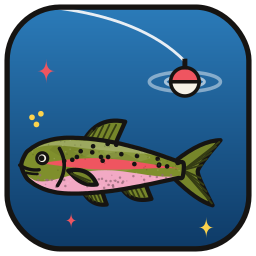

These keys run the plugin's own game code. Click a key to press it, and hold it to open your tackle box. Your catches are kept in this browser.
Nothing about the game. The keys are drawn and driven by the plugin's real code, running on a stand-in for the Stream Deck software. Only the deck itself is fake, and progress is saved in your browser instead of Stream Deck.
Fishing is free on the Elgato Marketplace for Stream Deck 7.1 or later on Windows. Want more fish, rods and an OBS overlay? Try the Fishing Pro demo.